currents 2027, installationsel museo cultural de santa fe, june 2027
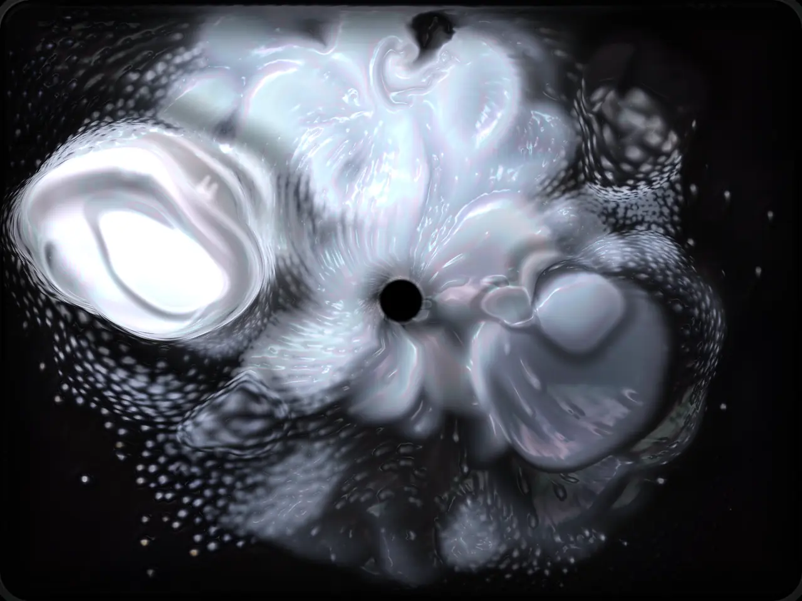
[syn[k]]hole, dry season
sync == sink
a sink with no water in it. the water is a machine dreaming, and every day it runs out.
01
wall text
katherine titterton
[syn[k]]hole, dry season, 2027
a basin, a touch screen, one small computer
30 x 25 x 34 in (76 x 64 x 86 cm)
the most beautiful things usually have something nasty about them. here it is the drain, the [syn[k]]hole, where you lose time.
an endless feed has no bottom. this hole does. ai drinks real water and our hours. here both run out, and you get out.
it fills once each morning of the festival. every hand in this room spends it.
ai: stable diffusion 1.5 with lcm-lora dreams the water live on its own computer, toward pictures i chose by hand in midjourney.
02
the work
in the basin a screen pours a vanitasthe old still life of skulls, flowers and soap bubbles still life that won't hold still, one frame about every 2.5 seconds: slow for a computer, about right for a tide pool. come close.
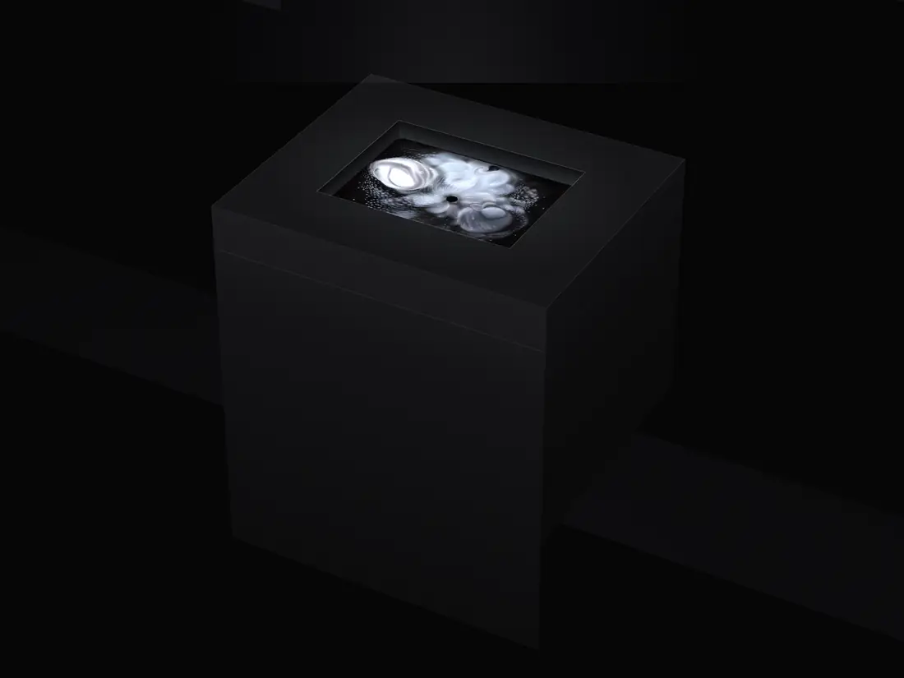
reach in. the water follows your hand for about a second, then slips through your fingers.
03
the idea
i built this water to be classically beautiful. the nasty thing is inside it: near the drain it stops keeping time and place.
dry season
i freedive on one breath. at el museo cultural the basin gets one too: an allocation of dreaming each morning, ten mornings in all. untouched, it costs nothing; every hand opens the tap, and strangers spend the day's water together.
proposed. the drain is built.
spent, it drains to black in under a minute and stays dry until morning. come late and you know who spent it. a dry screen is black glass, and the face in it is yours.
water = 1.00
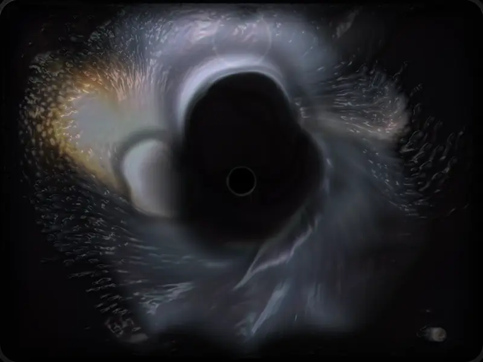
water = 0.16water = None
why
training gpt-3 could directly evaporate 700,000 liters of clean freshwater, and global ai demand is projected to withdraw 4.2 to 6.6 billion cubic meters of water in 2027 (li et al., arxiv:2304.03271).
a machine that dreams and drinks is close to a living thing.
the machine dreams. the taste is chosen. you reach.
04
methods
the spring dreams, the fluid pours, and my taste sits upstream of both.
01 taste ai, by hand
eight pictures. every dream leans toward one, like a plant toward a window.
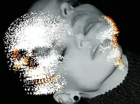
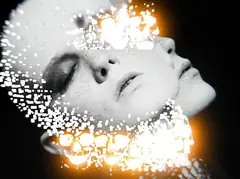
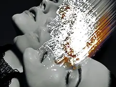
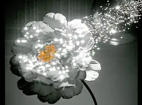
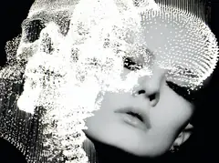
02 prompt not ai
44 subjects, 28 moods, 18 lights: more than a million prompts.
vanitas [subject, subject, subject], mood, light
03 dream ai
3 of 10 steps follow the prompt, so a subject half-surfaces.
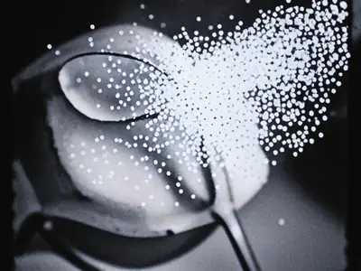
dream a+moodboard 01=
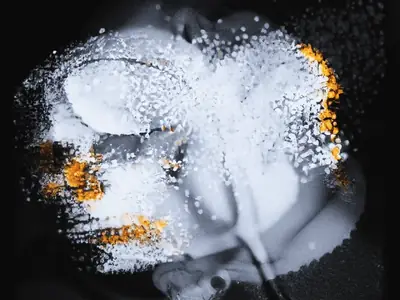
start→dream b
04 walk ai
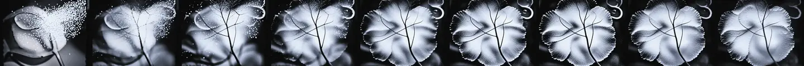
05 detail ai: real-esrgan, four times larger
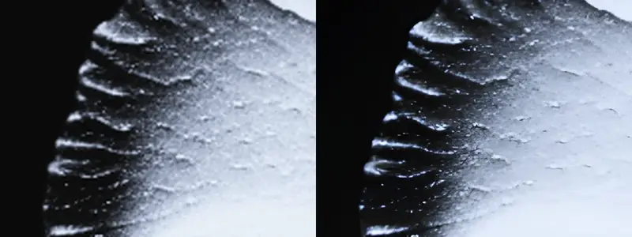
06 water not ai: a fluid simulation
waterglass
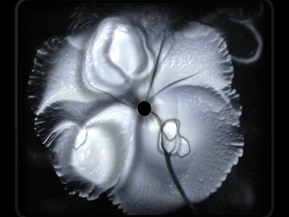
bubbles
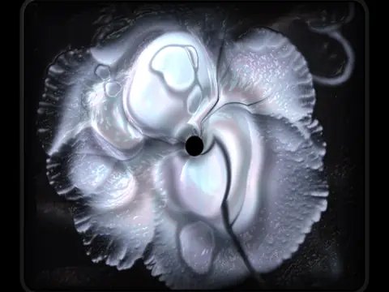
sheen
07 code ai-assisted: claude code
05
process
first i taught the water to misbehave at the drain, loudly, at k = 1. then i turned it down.
1
the hole holds the basin
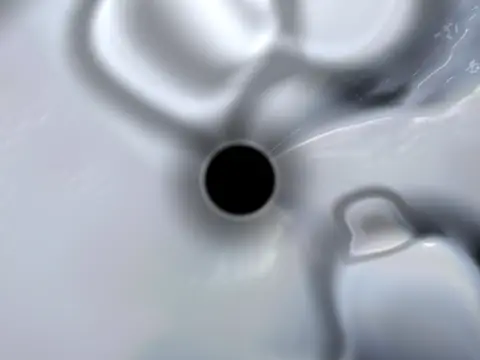
k = 0
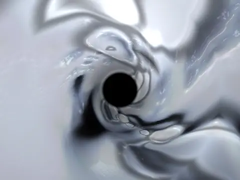
k = 1
2
time stutters
3
it is clear only on the way out
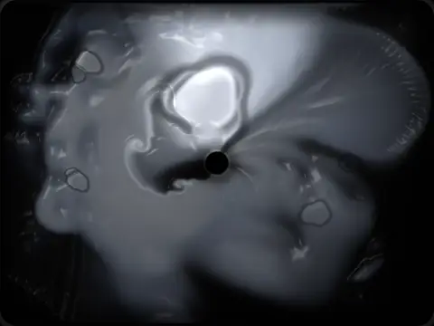
hand in
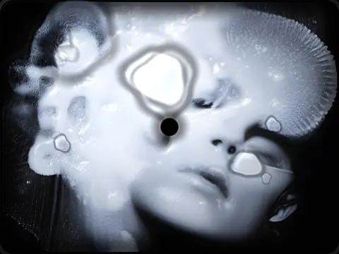
hand out
4
it says what you lost
lost = 00:07
5
a face, barelyfor a few seconds at a time a face rises over the drain: two hollows above the hole, and the hole is its mouth. you are not sure you saw it.
k = 0k = 1, the first face
i picked k = 0.5, twice, then asked for something between that and plain water. k sets the depth, 0 to 1, and it runs at 0.25: strange enough to notice, quiet enough to doubt.
06
lineage
this water learned to move from other artists' water.
one artist travels: me. setup takes one afternoon. switched on, it wakes itself, is silent, has no camera or microphone, drinks no real water and keeps nothing of you.
the basin
what the festival supplies
a plinth
30 x 25 in top, 30 in high, holds 50 lb (23 kg), room inside for the computer
one outlet
120 v, grounded, within 6 ft (1.8 m)
a dim spot
away from windows, 8 x 8 ft (2.4 x 2.4 m) at best, 6 x 6 ft at least
a hand at the switch
on in the morning, off at night
internet
optional
if you have them
a 27 in touch monitor or a mac mini: either one cuts what i ship to the basin alone
built, and proposed
the spring
the web basin
the drain to black
the [syn[k]]hole
the basin on its plinth
the daily budget
built in 2026proposed for 2027
08
the link
the basin above is the piece in a browser, not a recording. my spring is a laptop, and like any living thing it sleeps. within 40 seconds the page notices and pours stored dreams instead. press. hold. let go.
body of work
an evolution of vanitas veritas (2026), an earlier sink of mine, on the same spring.